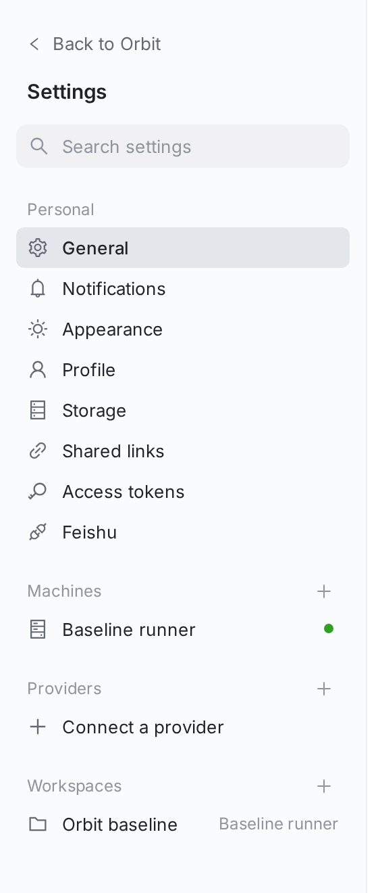
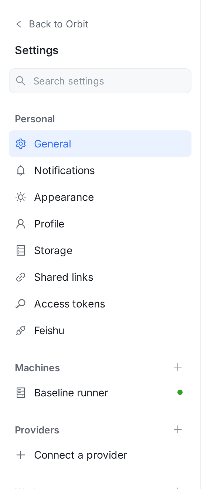
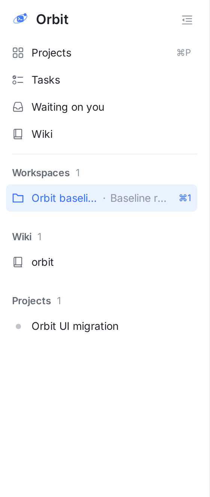
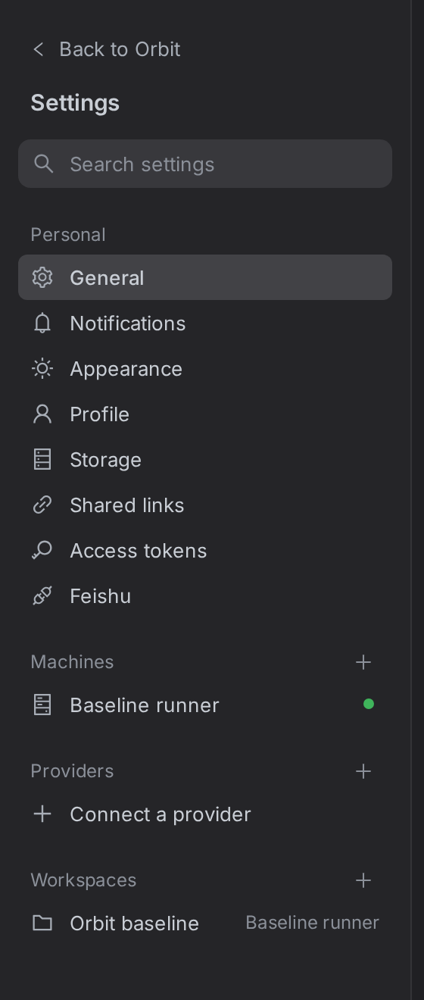
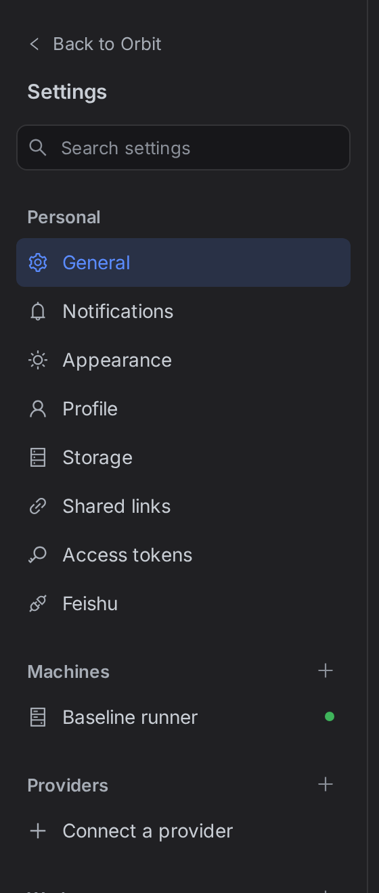
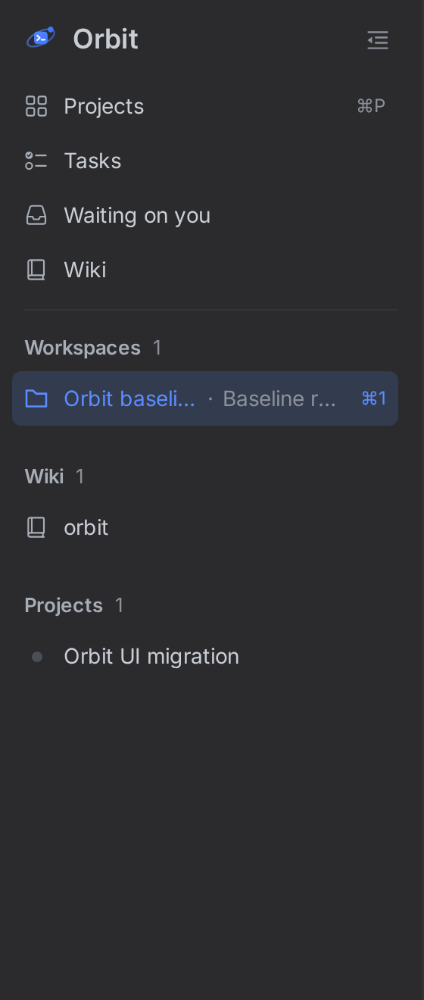

真实页面截图（vite + ui-migration fixtures，1440×900 @2x），只截左侧导航栏。② 是把 proposal.css 注入到真实页面后的效果，和准备提交的改动完全一样。
Light



Dark



| 元素 | ① 现在 | ② 修改后 | 对齐的主侧栏规则 |
|---|---|---|---|
| 侧栏底色 | --bg-subtle #fafbfc | --bg-base 白（保留右侧 1px 分隔线） | 主侧栏是 --bg-base |
| 选中行 | --bg-hover-strong 灰底，黑字，字重 500 | --brand-tint 浅蓝底，图标、文字和右侧标注都是 --brand，常规字重 | .tp-item.active、.tp-item.active .tp-count |
| 搜索框 | --fill-muted 实心灰，无边框，32px | --bg-sunken + 1px --border-subtle，34px | .session-search |
| 分组标题 | 12px，--text-3，26px 高 | 13px，字重 600，--text-2，32px 高 | .tp-group-name、.tp-group-head |
| 行高 / 字号 | 30px / 13px | 36px / 14px | .tp-item |
src/web/src/components/settings/Settings.css，不新增颜色变量，深色主题自动跟着改。.settings-nav-sortable.dragging）仍是灰底加阴影，不变。